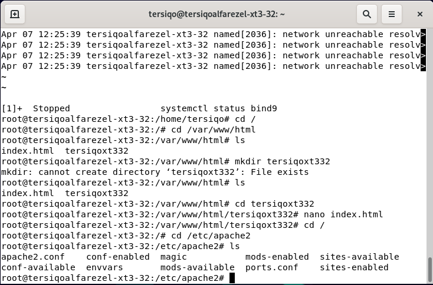

Langkah Pertama
ketik apt-get install bind9
Langkah Kedua
ketik systemctl status bind9
Langkah Ketiga
ketik cd /
Langkah Keempat
ketik cd /var/www/html
Langkah Kelima
ketik ls
Langkah Keenam
buat file baru dengan mkdir nama
Langkah Ketujuh
ketik ls
Langkah Kedelapan
ketik cd nama file
Langkah Kesembilan
ketik nano index.html
Langkah Kesepuluh
ketik kode kode html untuk membuat website
Langkah Kesebelas
ketik cd /
Langkah Keduabelas
ketik cd /etc/apache2
Langkah Ketigabelas
ketik ls
Langkah Keempatbelas
ketik cd sites-available
Langkah Kelimabelas
ketik ls
Langkah Keenambelas
ketik cp 000-default.conf namafile.conf
Langkah Ketujuhbelas
ketik ls
Langkah Kedelapanbelas
ketik nano namafile.conf
Langkah Kesembilanbelas
ganti tulisan localhost dengan nama web anda dan tambahkan nama file anda di /var/www/html/namafile
Langkah Keduapuluh lalu ctrl+x
ketik cp namafile.conf /etc/apache2/sites-enabled
Langkah Keduapuluhsatu
ketik cd sites-enabled
Langkah Keduapuluhdua
ketik ls
Langkah Keduapuluhtiga
ketik rm 000-default.conf
Langkah Keduapuluhempat

ketik systemctl restart apache2
Langkah Keduapuluhlima
Langkah Keduapuluhenam
ketik dan masuk ke web anda
Langkah Keduapuluhtujuh
ketik cd /etc/bind
Langkah Keduapuluhdelapan
ketik ls
Langkah Keduapuluhsembilan
ketik cp db.local db.namafile
Langkah Ketigapuluh
ketik dan ganti localhost menjadi tersiqo.com, lalu db.local menjadi db.namafile, lalu 127 menjadi 192, lalu db.127 ke db.160(sesuai ip debian anda
Langkah Ketigapuluhsatu
ketik nano db.namafile
Langkah Ketigapuluhdua
ketik dan ganti localhost menjadi tersiqo.com dan 127.0.0.1 menjadi 192.168.0.160(sesuai ip debian)